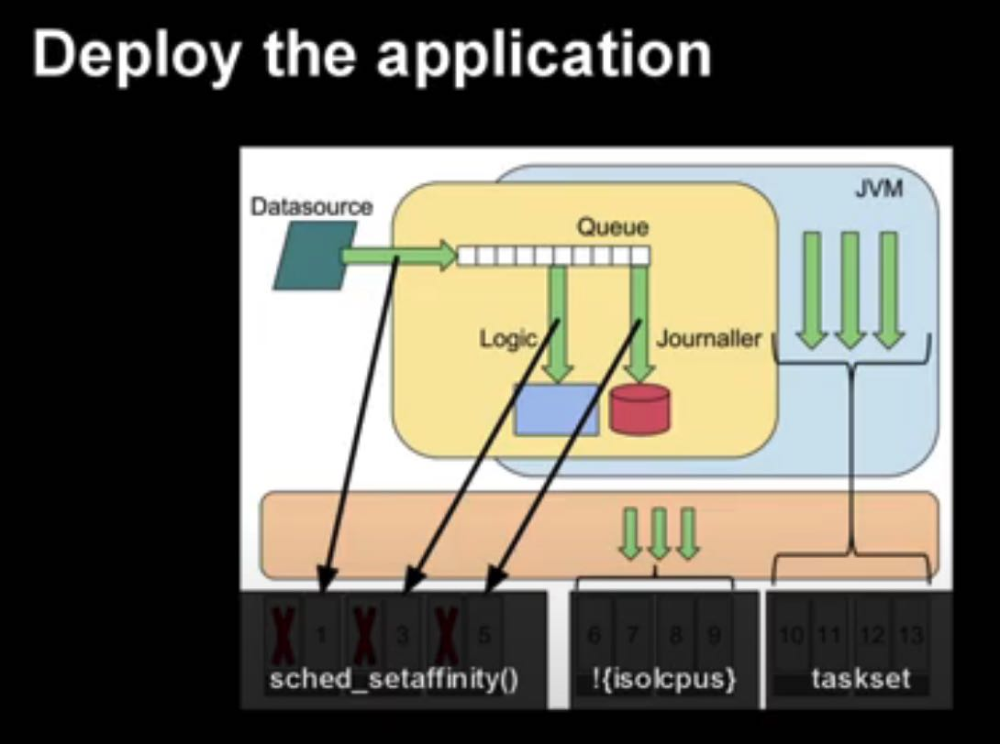
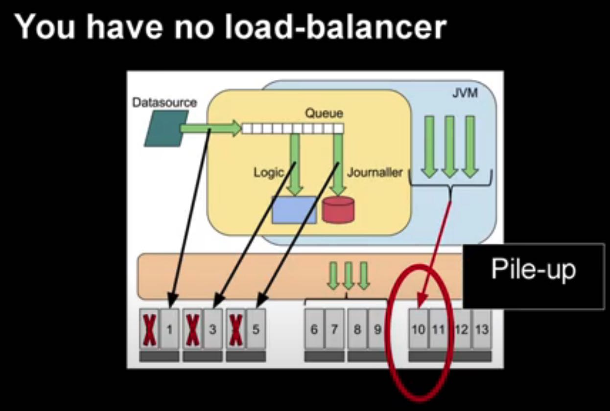
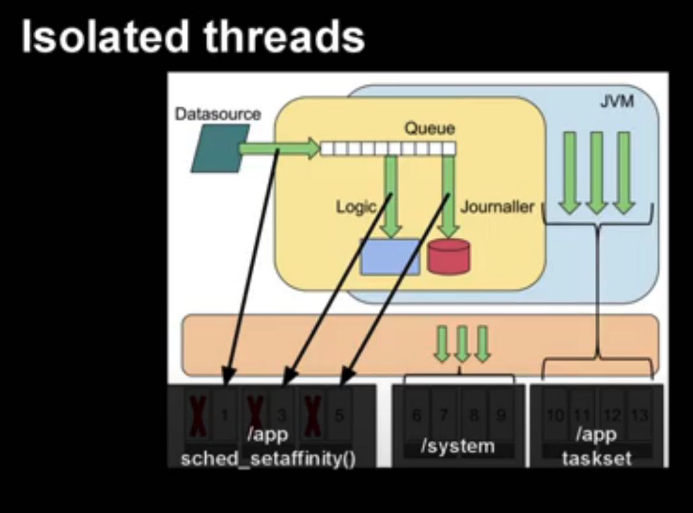
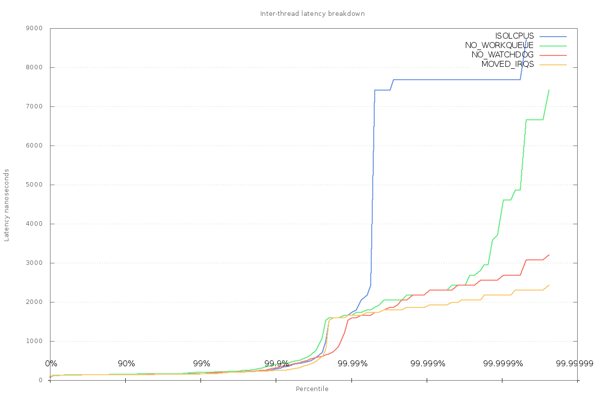

When the OS gets in the way - Mark Price
https://www.youtube.com/watch?v=1bUVbcvqBSA
作者有个github来演示如何reduce latency jitter的 https://github.com/epickrram/perf-workshop
具体分析过程的话有几篇文章作者其实也记录下来了：
- Technical Itch: Reducing system jitter https://epickrram.blogspot.com/2015/09/reducing-system-jitter.html
- Technical Itch: Reducing system jitter - part 2 https://epickrram.blogspot.com/2015/11/reducing-system-jitter-part-2.html
- Technical Itch: JVM guaranteed safepoints https://epickrram.blogspot.com/2015/08/jvm-guaranteed-safepoints.html (这篇文章主要是在跑JVM的时候，要将GC的影响减少到最小，除了GC本身之外，JVM里面的safepoints也可能有影响)
值得记录的是整个过程中，作者使用了什么工具来定位问题，以及如何解决问题的：
CPU主频的影响：
CPU是否在performance模式 `cat /sys/devices/system/cpu/cpu0/cpufreq/scaling_available_governors`
观察每个CPU运行频率（ 可能是采样模式） `perf record -e "power:cpu_frequency" -a`
starrocks_be 129965 [030] 1991194.687221: power:cpu_frequency: state=3800000 cpu_id=30 starrocks_be 129817 [033] 1991194.722676: power:cpu_frequency: state=3800000 cpu_id=33 starrocks_be 166592 [019] 1991194.868604: power:cpu_frequency: state=3800000 cpu_id=19
进程在CPU上迁移
观察线程执行时间以及在哪个core上运行，切换core会存在L1/L2/L3/numa访问的开销损失
- `perf record -e "sched:sched_stat_runtime" -t 11370 -t 11372` 观察线程
- `perf record -e "sched:sched_stat_runtime" -C 1` 观察core
有几个工具可以使用：
- isolcpus 可以让OS scheduler不在某些cores上调度，但是需要重启机器。之后用户需要使用taskset绑定进程。
- 不过上面这个方案作者也提到了问题，就是taskset下来没有任何load-balancer功能，所有的threads都会被放在一个core上，就是图中core 10的情况
- 正确的方式是使用cpuset这个工具，将其余进程使用cset绑定在保留的cores上
- 所以其实不要使用lsolcpus这个东西，只需要cpuset, taskset以及sched_affinity



CPU上的Context Switch
https://epickrram.blogspot.com/2015/11/reducing-system-jitter-part-2.html
虽然上面已经做了用户线程的绑定核，但是kernel process还是会被切换到这个上面来。可以使用下面这个命令来观察context switch情况 `perf record -e "sched:sched_switch" -C 1,3`
然后可以使用ftrace来来观察每个函数的执行时间 `trace-cmd record -p function_graph -P <PID>`
作者在文章里面做了下面几个调整
- 调整kworker::vmstat_update刷新时间
- 关闭watchdog
- 调整interrupts的smp affinity.
最后面interrupts过程是这样的
- 通过 `cat /proc/interrupts` 观察中断次数分布
- 看 `cat /proc/irq/47/smp_affinity_list` 某个irq的绑定情况
- 修改smp_affinity_list. 不过这个需要看根据irq情况看是否可以修改绑定
